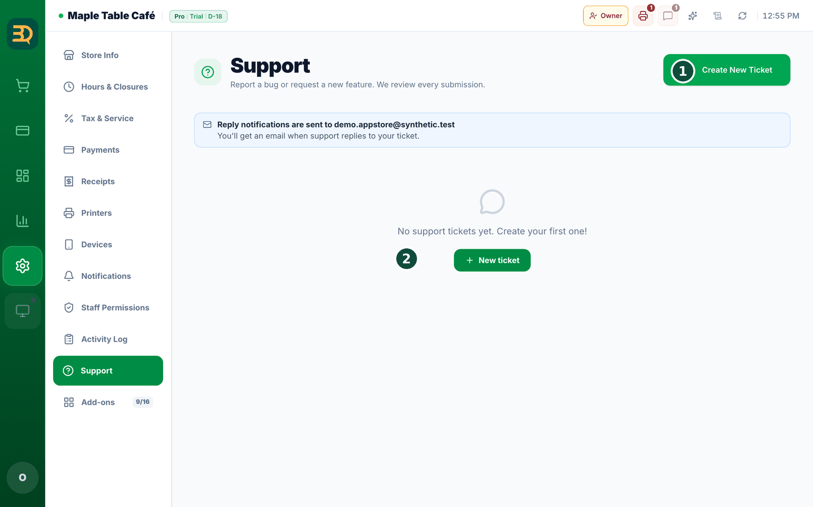

22Troubleshooting & support
Things go wrong sometimes — that's okay. Here are quick fixes for the most common ones, and how to ask us for help.
- The Card button looks grey and won't tap? You haven't linked your Stripe account yet. Go to Chapter 7 to connect it.
- The internet went out? Don't worry — just keep selling. BrewDesk works fine offline. See Chapter 15.
- A kitchen ticket didn't print? Check the printer is on, then look in the retry list. See Chapter 18.
- A blank white screen, or the app looks stuck after an update? Tap the Refresh / Clear cache button at the top of the screen and confirm. It clears the old app files and loads a fresh copy — your saved orders and settings are safe.
- Still stuck? Tap Help in the app and open a support ticket (that means you write us a message). Or go to brewdesk.io.
Refresh / Clear cache is the quick fix right after an update. It reloads the newest version of the app without touching your saved orders or settings.
A support ticket is just a message you send to our help team. Tell us what went wrong and we'll get back to you.
Buttons cut off, or text too small on a little tablet? Open the account menu (top right) and look for Display Scaling. Leave it on Auto and BrewDesk fits the screen to your device by itself, showing you the percentage it picked. Switch to Manual if you'd rather choose the size yourself.
Not signed in, or helping someone who isn't? There's a plain help page at brewdesk.io/support — no login needed. It has our email address, how long we usually take to reply, and answers to the questions we get most (offline, hardware, card payments, device limits, cancelling, where your data lives).

When BrewDesk updates itself
We improve BrewDesk all the time, and your till picks up the new version by itself. It never does that in the middle of a sale — here's exactly when it happens and what you'll see.
- Updates only start just after you switch the till on for the day — not while you're using it. A page refresh doesn't count; it has to be a real restart.
- Even then BrewDesk checks it's safe first: the basket must be empty, no payment in progress, you're online, and nothing is waiting to sync. If any of that isn't true, it waits for another day.
- You get a 3-second warning before anything happens: "Starting the update" → "Starting in 3s."
- Not now? Just touch the screen. The message says "Tap the screen to do this later" — one tap cancels it and you carry on. It won't ask again until the next time you switch on.
- If you let it run, the update screen appears with your logo and a short line telling you what it's doing: "Checking the new version" → "Loading the screen" → "Loading your store". It only happens once a day per device.
It tells you when it's taking a while. After about 15 seconds the line changes to "Taking a little longer. You can leave it as is." Nothing is broken — leave it alone and it will finish.
In a hurry? Start with what's saved. If it's still waiting after roughly 22 seconds you'll see "Waiting for your store information" and a "Start with saved data" button. Tap it and you go straight into your store screen using the information already on the device, so you can serve the next customer.
You never have to sit and watch it. The bottom of the screen always says "When the update finishes, it'll return to your store screen on its own." And if the update can't finish, BrewDesk gives up rather than trapping you: "We skipped the update this time. Everything works just as before."
Updating on purpose — and why it sometimes waits
You can also ask for the update yourself instead of waiting for the next morning. A list opens showing what's new, with an update button underneath.
- Tap the update button. If the till is busy, nothing is lost — BrewDesk holds the update and tells you why in one line.
- "An order is still open. We'll apply it once it's done." — finish or park the basket.
- "A payment is in progress. We'll apply it when it's done." — never mid-payment, ever.
- "Please check your internet connection." or "Some orders haven't been sent yet. We'll apply it once they're synced." — it waits until your orders are safely up.
- When the coast is clear it says "Getting the new version" and then reloads your store screen by itself.
Taking its time? After about 20 seconds you'll see "Taking a little longer. You can leave it as is." If it really can't fetch it: "We couldn't get the new version right now. Please try again in a moment." Nothing is broken and nothing is lost — carry on serving and try later.
After it updates, it tells you. Next time the till starts you get a short note — "This version includes improvements and fixes." — so a screen that looks slightly different isn't a mystery.